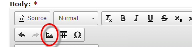

To add an image to a forum post, please upload your image to the forum by using 'File Attachments' which can be found below the post editor window;
Once uploaded, copy the URL from beneath the uploaded image;
Then back to the editor, select the 'image' icon from the editor toolbar;

...and add the URL which you copied above;
...and that's it!
Paul
Re: How to add an image to your post - PLEASE LIMIT THE WIDTH TO 700 PIXELS
And can we add "Don't post images on 3rd party sites and then provide links" This is for two reasons: (1) we don't know how safe those sites are, and (2) the images won't necessarily remain available. Should they be deleted at some point in the future, the unavailability of the image will be frustrating and will completely devalue your post. If you don't need the image to appear in the body of your post, you can stop when you've uploaded the file. In that case, it will appear as a thumbnail at the bottom of your post, which can be clicked to open. It's also helpful, if your image is wider than 700px, to set the width to 700px so that it doesn't overlay the right-hand column - the site map.